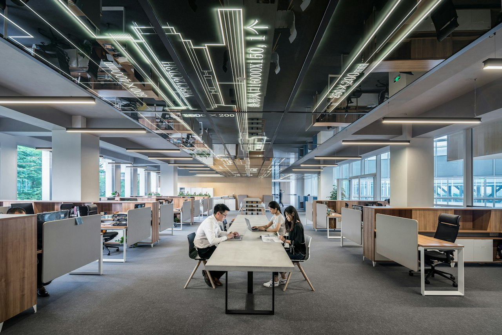

Les chiffres du mois
Suivez les indicateurs macro-économiques clés et leurs évolutions récentes sur le territoire.
L’emploi, les rémunérations et la vie des entreprises.
Choisissez votre rubrique, puis votre niveau de lecture.
Suivez les indicateurs macro-économiques clés et leurs évolutions récentes sur le territoire.
Analysez la vitalité du tissu économique et les évolutions de la situation des entreprises.

Visualisez les dynamiques de l’emploi, les embauches et la masse salariale.